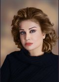

|
|
|
Browsing
Contact Us |
Campaigners |
Face to Face |
Tribune |
Interview |
News |
On the Web |
One Million |
Report
Farsi | Français | German | Italian | Spanish | العربية Also in this section
|
 Polygamy and Its Impact on the Mental and Emotional Health of Childrenby: Dr. Parisa Saed Alhashim Tuesday 25 November 2008 Change for Equality: Children develop self-esteem and a sense of well-being when they are raised in a nurturing and loving environment. If abandoned by either parent, children may feel unwanted or unloved. When attention and praise are withdrawn, or absent, children often respond by becoming anxious and/or depressed. During my work in the Saudi kingdoms ch2 TV as a director and presenter of social program- titled with Dr. Parisa.- each week I covered a real life story of abused women and children coming from broken families. In making these life stories, I interviewed many social workers, teachers and therapists who treat abandoned women and children. I also visited charity centers such as Al-Al-ashram, Al wafa, Ensan king abdoulazize and others. Through numerous clinical interviews, surveys and interviews with neglected wives’ and children suffering from emotional abuse and misuse of polygamy, I concluded that Children in polygamous household can experience a greater risk of neglect from their parents when father’s love and support is absent, distorted, or divided unequally. Young children are directly affected by their mothers’ emotions and in polygamous families their rate of depression and anxiety is positively correlated with their mothers’ sense of insecurity and depression. A high number of these children exhibit symptoms of severe depression, anxiety, low self-esteem, self destructive behavior with tendency towards violence. For example, a Saudi mother of polygamous marriage whom I interviewed at Wafa charity center said “since my husband married his new wife, he has abandoned me and our six children. My children miss their father enormously. My 7 years old daughter is behaving erratically- she set our house on fire.” Wasan, a social worker in king Abdoul Aziz charity center, told me "It is emotionally devastating for children when their mothers are abandoned in favor of new wives". Furthermore, preferential treatment of children according to who is their mother causes a sense of lack of worth for children in polygamous households. Children of the first wife often feel abandoned and unwanted when the father neglects them and their mother, in favor of newer wives and their children. Domestic violence is a serious risk in these households as parents may attack one another or the children of less favored wives, or the children from one mother may attack the children from a different mother. Aside from the actual physical harm experienced by young victims of domestic violence, this abusive environment can seriously affect the victims’ mental development and health. This in turn increases the chance that they become perpetrators of acts of violence. The health of the mother, mentally and physically, also has an effect on the development of the child, as early as in the womb. When a mother feels anxious, this anxiety is transmitted to the child and increases the child’s risk for mental illness. When mothers worry about the stability of the household, children become insecure. This may affect their performance in school or how they interact with family members and other children. In one case, three young sisters supported by Ensan charity center all quit school due to lack of motivation and severe depression. Economically, polygamy makes it even more difficult for a father to provide for all of his children because it becomes more likely that he will have many children. Even fathers who wish to be involved in the lives of all of their children find that they must spend most of their time away from their family in order to provide financial security for their children and wives. When fathers fail to do so, the consequences are dire. Children and mothers experience emotional and financial depravation. In an attempt to find a sense of self-worth, belonging or a father figure, these children are more vulnerable to following people who encourage them to engage in violent behavior. Those children who do not behave aggressively towards others may often turn to drugs or alcohol, experience mental and emotional difficulties, or they may exhibit some kind of behavioral problems. The difficulties of being a supportive, loving father are often noticed by the fathers themselves. One illustration of the difficulties may be found in the International Herald Tribune account of the life of Aga Hemmed Aslant, a Kurdish village chieftain, who lives in Turkey with his five wives, 55 children and 80 grandchildren. When interviewed about his large family he says that he regrets not having only one wife. In order to prevent wives from competing with one another, he was forced to build their homes far apart, which made it harder for him to spend time with all of his children. Aslant is so opposed to polygamy that he has forbidden his sons to take more than one wife and has taught all of his daughters to refuse to become second wives. His feelings come not out of shame, but a reality check. He now knows that his wives would become jealous of one another and pick on the weakest ones. On several occasions, he has come across children that he did not realize were his. Feeding, clothing and sheltering so many children have also been large financial challenges for Aslant. However, as chieftain of his village, Aslant has been able to provide for his family. But this is often not the case. It is quite common for fathers to abandon their families when they cannot provide for them. Frequently, the eldest sons will drop out of school in order to find jobs to support the family. This in turn makes it more unlikely that he will be able to support his own family when it is time for him to marry. These various difficulties illustrate that the practice of polygamy affects everyone in the family. Polygamy can endanger family, the pillar of the society in the most serious way. If the family structure collapses, the wreckage is felt by all. As a Muslim woman, I- along with many other Muslims- share the following interpretation of Islamic guidance on the issue of polygamy: When Prophet Mahamed exposed his revelation about the conditions under which a man could have more than one wife, polygamy was already a common practice. Therefore Prophet Mahamed revealed that marriage is a divine institution and as such the relationship between a husband and a wife is sacred. If a man takes more than one wife, he is commanded to treat them all equally. But, who ensures that all the wives and children are treated equally and justly? Are the men able to recognize their unjust behavior ever? Are those who misuse Prophet Mahamed’s guide-line of polygamy ever able to recognize their unjust behavior? To prevent domestic abuse and social disintegrations, each member of the Society must have an interest for the welfare of women and children. The suffering of neglected wives and children should be everyone’s concern. If authorities do not concern themselves with the family welfare, the society becomes weaker, for the status of families has a profound impact on the strength or the weakness of society. Ultimately, when Women and children suffer, society suffers and pays the price as a whole. This is true not only about Saudi society or other Middle Eastern societies, but about all societies as the unit of family is the foundation of all societies everywhere in the globe. |